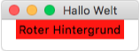
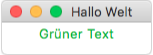
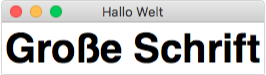
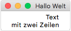

Styling (Aussehen)¶
Die meisten Widgets lassen sich in ihrem Aussehen beeinflussen. Dies kann entweder beim Erstellen passieren:
label = Label(master=fenster, background="red")
oder zu einem späteren Zeitpunkt über die config() Methode:
label.config(background="red")
Eigenschaften¶
Im folgenden sind die wichtigsten Eigenschaften aufgelistet, die für alle Widgets gesetzt werden können.
# Hintergrundfarbe setzen
# Farben können durch ihren Namen angegeben werden
widget.config(background="red")
|

|
# Vordergrundfarbe (Textfarbe) setzen
# Farben können durch ihre RGB-Werte angegeben werden
widget.config(foreground="#00AA00")
|

|
# Zeichensatz (Font) setzen
# Das Tuple kann 3 Werte enthalten:
# 1. Schriftart ("Courier", "Helvetica", "Times")
# 2. Schriftgröße
# 3. Schriftschnitt ("bold", "italic", "underline", "normal")
widget.config(font=("Helvetica", 40, "bold"))
|

|
# Für mehrzeiligen Text kann die Ausrichtung gesetzt werden
# mögliche Werte: "left", "center", "right"
widget.config(justify="right")
|

|